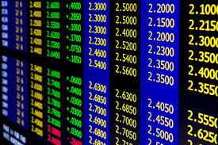
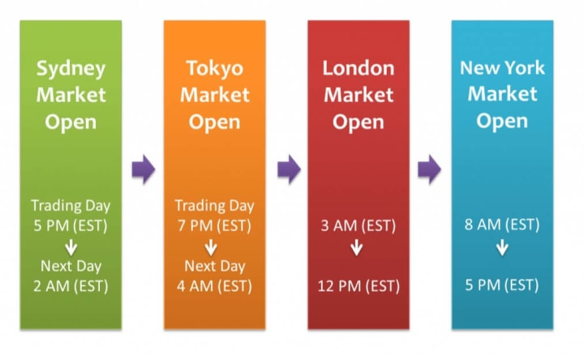

The foreign exchange market is the most liquid financial market in the world, with daily turnover exceeding $9.6 trillion. It operates as a decentralized, global network where currencies are exchanged 24 hours a day across major financial centers.
Forex is not just trading — it is the engine that powers global commerce, investment flows, and economic stability.
How the Forex Market Actually Works
Unlike stock exchanges, Forex is traded over-the-counter (OTC). There is no central exchange. Transactions occur electronically between banks, hedge funds, corporations, brokers, and retail traders.

Core Market Concepts
- Currency Pairs: Always traded in pairs like EUR/USD.
- Base & Quote: First currency is base, second is quote.
- Exchange Rate: Relative value between two currencies.
- Liquidity: Massive daily trading volume.
- Sessions: Asian, London, and New York cycles.
Liquidity, Leverage & Volatility
High liquidity ensures efficient execution and tight spreads. However, leverage magnifies both gains and losses, making risk management essential.

The Interbank Network
The interbank market is a global network where major financial institutions trade currencies directly. It forms the backbone of the Forex ecosystem.
Why Forex is Traded
- International trade settlements
- Hedging currency risk
- Speculation for profit
- Central bank monetary policy
- Portfolio diversification
Final Perspective
Forex offers global opportunity, unmatched liquidity, and continuous market access. Mastery requires discipline, analysis, and professional risk control.